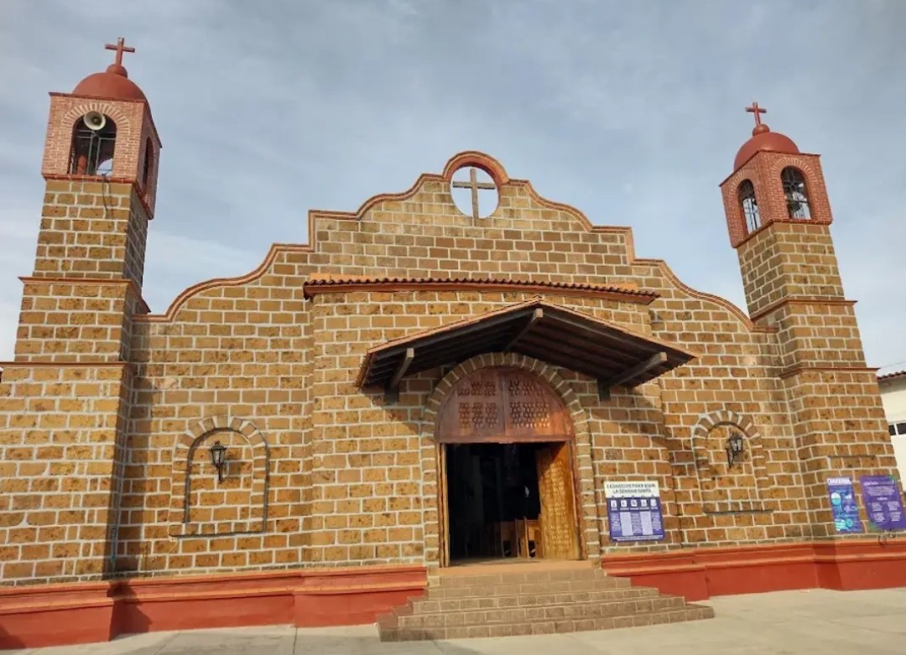
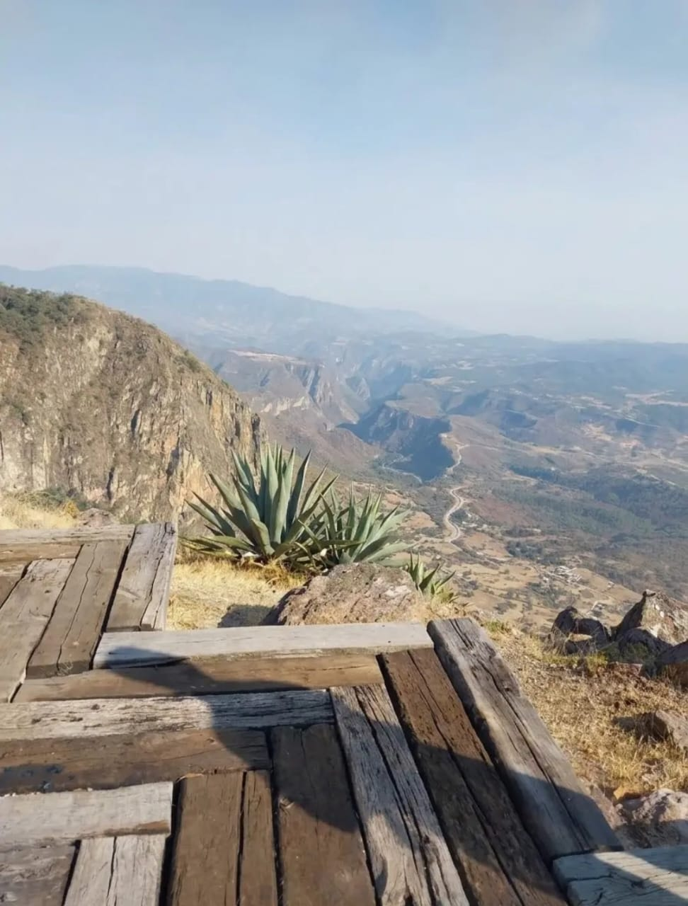
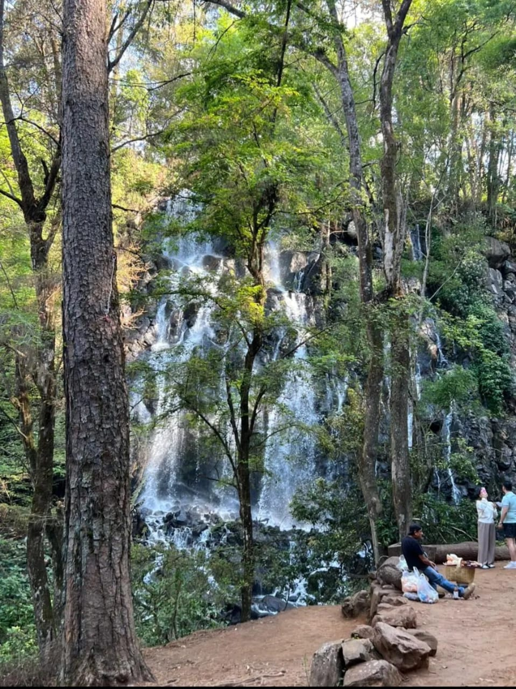
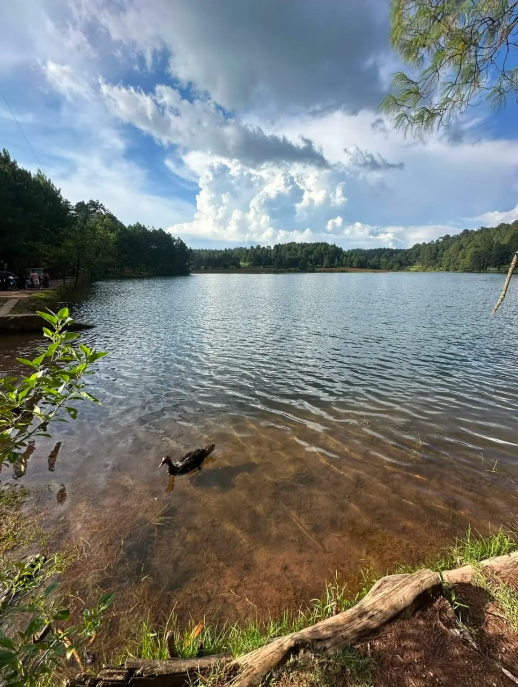
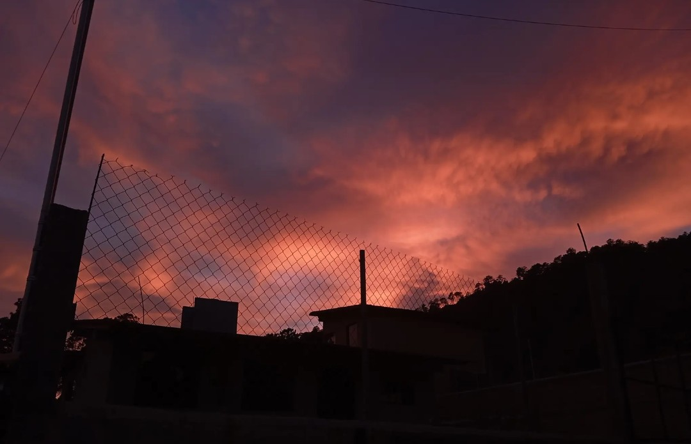
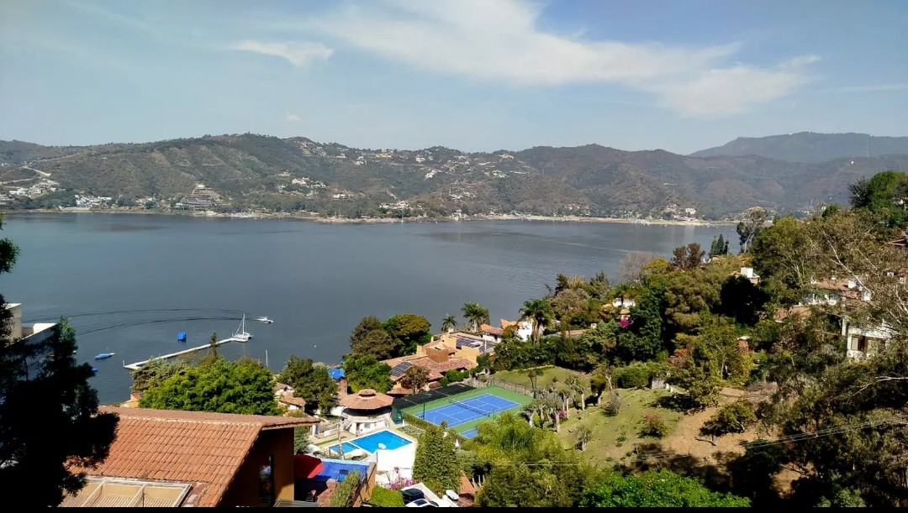

"La Iglesia de Cerro Colorado, también conocida como Parroquia de la Inmaculada Concepción, se encuentra en la comunidad de Cerro Colorado, municipio de Valle de Bravo, sobre el Camino de la Compañía. Es un templo que forma parte de la identidad religiosa de esta comunidad y destaca por su arquitectura y ambiente tranquilo. ."
"Al visitarla puedes conocer sus instalaciones, apreciar sus características arquitectónicas, tomar fotografías de su fachada y conocer las tradiciones religiosas de los habitantes. Es un sitio que permite descubrir el patrimonio cultural de las comunidades de Valle de Bravo."

"San José Potrerillos se encuentra en la zona rural de Valle de Bravo, cerca de la comunidad de Mesa Rica, en una región montañosa con una altitud aproximada de 2,382 metros. Sus alrededores se caracterizan por sus paisajes naturales, terrenos elevados y vegetación. "
"Es una zona atractiva para quienes disfrutan del campo y la tranquilidad. En sus alrededores se pueden realizar caminatas por caminos permitidos, observar los paisajes montañosos, tomar fotografías y disfrutar del contacto con la naturaleza. También destaca la experiencia de conocer las comunidades rurales del municipio."

"La cascada Velo de Novia se encuentra en la localidad de San Lorenzo, en la zona de Avándaro, municipio de Valle de Bravo. Tiene una caída de agua de aproximadamente 35 metros y recibe su nombre porque el agua desciende formando una cortina blanca parecida al velo de una novia. Está rodeada de un hermoso bosque de árboles y vegetación. ."
"Es un atractivo natural donde los visitantes pueden caminar por senderos, contemplar la cascada desde sus miradores, tomar fotografías, disfrutar de un día de campo y observar la naturaleza. Su paisaje y el sonido del agua hacen que sea uno de los sitios más representativos del turismo natural de Valle de Bravo."

Godínez Tehuastepec es una ranchería perteneciente al municipio de Valle de Bravo, Estado de México. Se caracteriza por ser una comunidad rural rodeada de cerros, vegetación y paisajes naturales. Es un lugar tranquilo donde se puede apreciar la vida cotidiana de sus habitantes y disfrutar de un ambiente alejado del movimiento del centro de Valle de Bravo."
Su atractivo se encuentra en sus paisajes rurales, las vistas de las montañas, la vegetación y los atardeceres que pintan el cielo de diferentes colores. Durante una visita se pueden realizar caminatas por caminos públicos, tomar fotografías del paisaje, observar la naturaleza y conocer el ambiente de la comunidad. Es un lugar que permite apreciar la tranquilidad y la belleza de la vida rural de Valle de Bravo.

"La Parroquia de San Francisco de Asís se encuentra junto a la Plaza Independencia, en el centro histórico de Valle de Bravo. Es uno de los edificios religiosos más importantes del municipio y destaca por sus torres, campanarios y arquitectura histórica. En su interior conserva elementos religiosos de gran valor cultural, como una pila bautismal del siglo XVII. "
"Este lugar es atractivo para quienes disfrutan de la historia, la arquitectura y las tradiciones. Durante la visita se puede conocer el templo, apreciar sus detalles arquitectónicos, tomar fotografías y recorrer los alrededores, donde se encuentran el Jardín Central, los portales y diferentes establecimientos de comida y artesanías."

"La Peña es un mirador natural ubicado en Valle de Bravo, Estado de México. Es una enorme formación rocosa de origen prehispánico relacionada con los antiguos asentamientos matlatzincas. Desde su parte elevada se obtiene una vista panorámica impresionante del lago, el pueblo y las montañas que rodean el municipio.
Es un lugar ideal para disfrutar de los paisajes, realizar caminatas por sus senderos de acceso, observar el lago desde las alturas y tomar fotografías panorámicas. También tiene importancia histórica y cultural por los vestigios relacionados con las antiguas comunidades que habitaron esta región. ."